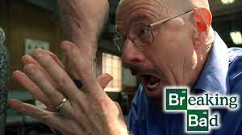

Breakin Bad


Walter White tem uma vida ruim, mas sempre fica pior, principalmente depois de descobrir que tem cancer, e ja que ele ja estga cagando e andando pra vida, ele decide que ira se arriscar e vender metafetamina
Pontos positivos: Você pode aprender a fazer matafetamina, e Gustavo é o melhor personagem
Pontos negativos: Gustavo o melhor personagem morre
Nota final: 3 de 5
Apenas duas coisas que faz ele ter 3 estrelas.
Primeira: Gustavo morre
Segunda:Não pode fazer metafetamina na vida real, oque é bem triste